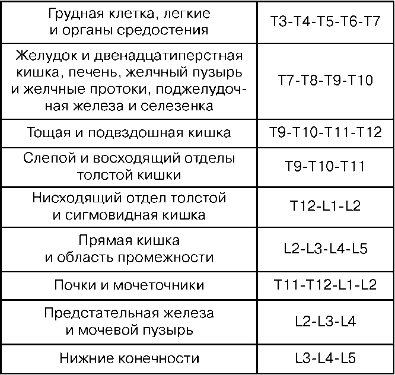

Показания: выраженный болевой синдром, хирургические вмешательства, обеспечение послеоперационной анальгезии. Уровень постановки перидурального блока зависит от того, какой орган необходимо обезболить.
Уровни позвоночного столба и «органы—мишени» при перидуральной анестезии

Инструментарий: иглы для анестезии, специальная игла для пункции перидурального пространства, шприц для пробы, катетер, заглушка, фильтр шарики, салфетки, лейкопластырь и стерильные перчатки. Положение больного сидя или лежа на боку. При этом колени и подбородок должны быть максимально приведены к грудной клетке. Таким образом создается максимальное сгибание позвоночника, при котором увеличивается угол между остистыми отростками соседних позвонков и подход к желтой связке облегчается. В асептических условиях и под местной анестезией 0,5 %-ного раствора новокаина производится пункция перидурального пространства. Вкол иглы производится строго перпендикулярно, но при остеохондрозе возможен угол наклона или при пункции в среднегрудном отделе. Когда игла войдет в толщу связок, из нее извлекают мандрен и присоединяют шприц с жидкостью. Дальнейшее продвижение иглы производят медленно и плавно с надавливанием на поршень шприца. Жидкость из—за значительного сопротивления связок не может покинуть шприц. Отсоединяют шприц и вводят катетер на 5–7 см, сопротивления не должно быть. Извлекают иглу и фиксируют проводник к спине лейкопластырем, выводя его на переднюю поверхность грудной клетки. Заглушка с фильтром фиксируется к проводнику. Вводится анестетик. После определяется уровень кожной анестезии. Осложнения: расстройства дыхания и гемодинамики, интоксикация, повреждения твердой мозговой оболочки, неврологические осложнения, перидурит.